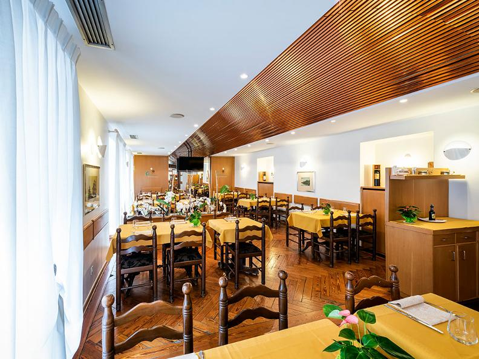
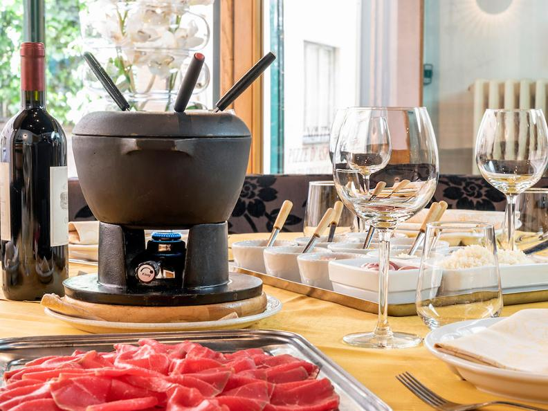
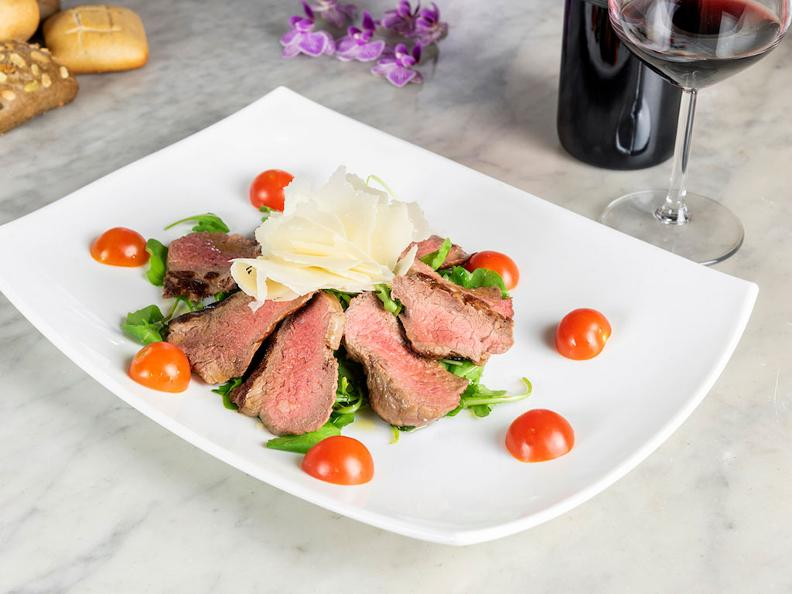
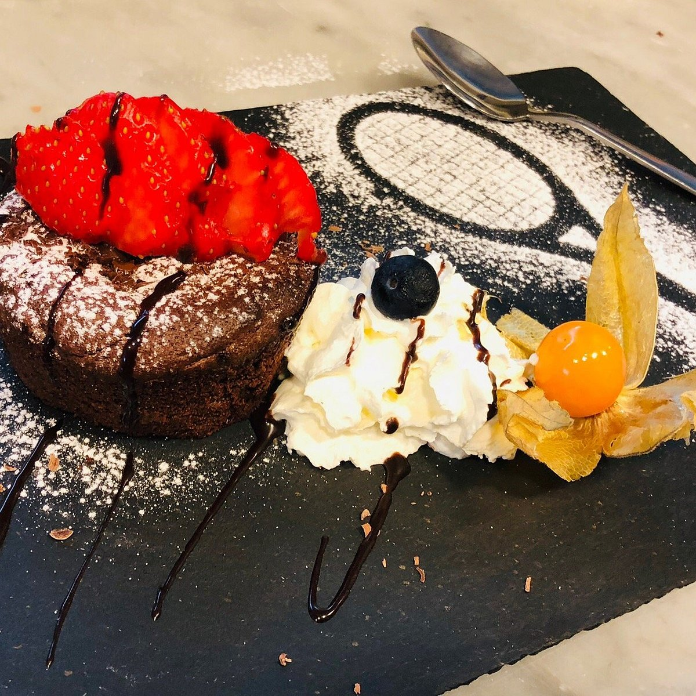
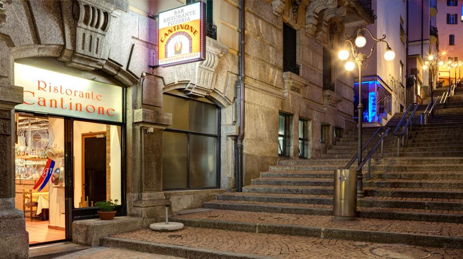

RISTORANTE
CANTINONE
Cucina Tellurica. Esperienze Esterne.
Il contenuto seguente non è altro che un anteprima, tutto il contenuto e/o il design può essere cambiato.
PrenotazioniSezione I Origine.
Il Cantinone riscrive la narrativa del grotto tradizionale. Non è solo pietra e legno, ma un punto di fusione tra la storia geologica di Lugano e l'ingegneria del gusto. Un luogo dove l'eredità Ticinese è processata attraverso lenti ipermoderne.
La nostra filosofia non è conservativa, è evolutiva: ingredienti locali estratti, non semplicemente raccolti. Tecnica ancestrale, risultato futuristico.
Questo è un invito a cenare dove il tempo si stratifica.
L'Architettura del Gusto
Spazi scolpiti. Materia e luce.





COORDINATE E ACCESSO
Protocolli Operativi
Martedì – Sabato
Pranzo: 11:30 – 14:00
Cena: 18:30 – 22:00
Chiuso: Ciclo Domenica / Lunedì